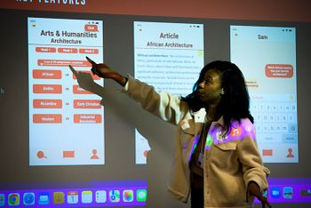

Building a Portfolio
Showcase Your Work with a Professional Portfolio
A well-crafted portfolio is a powerful tool to demonstrate your skills, experiences, and accomplishments to potential employers. Whether you're applying for internships, jobs, or freelance opportunities, a portfolio can set you apart from other candidates by providing tangible evidence of your capabilities.
On this page, you'll find resources and tips to help you create an impressive portfolio that highlights your unique strengths and aligns with industry standards.
Steps to Create Your Portfolio
- Choose the Right Platform: Select a platform that suits your needs, such as GitHub for code projects, Behance for design work, or a personal website for a comprehensive showcase.
- Gather Your Best Work: Include a variety of projects that demonstrate your skills and expertise. Focus on quality over quantity.
- Provide Context: For each project, include a brief description, your role, the tools and technologies used, and any outcomes or results.
- Organize for Clarity: Structure your portfolio in a way that is easy to navigate. Use categories or tags to group similar projects together.
- Keep It Updated: Regularly add new projects and remove outdated ones to ensure your portfolio reflects your current skills and experiences.
Portfolio Resources
-
Canva Portfolio Templates
A variety of customizable templates to help you create a visually appealing portfolio. -
Behance
A platform to showcase and discover creative work across various fields. -
Portfoliobox
A free tool to create and manage your online portfolio. -
Wix Portfolio Templates
Professionally designed templates to help you build a stunning portfolio website. -
LinkedIn Portfolio Section
Utilize LinkedIn's features to showcase your projects and accomplishments.
Frequently Asked Questions — Portfolios (UMSI)
These FAQs are tailored for UMSI students preparing portfolios for internships, full-time roles, and academic presentations. For personalized guidance, schedule a portfolio review with the UMSI Career Development Office.
How many projects should I include?
Include 3–6 in-depth case studies that demonstrate both breadth and depth. You may also showcase smaller projects on a “Selected Work” page, but always prioritize quality and clarity over quantity.
What should each case study contain?
Structure your case studies using this flow: Context / Problem → Your Role → Process → Deliverables → Outcomes. Use visuals, prototypes, and measurable results wherever possible to make your impact clear.
How do I present group projects?
Always highlight your specific contributions within the team. You can list your role, showcase artifacts you created, or link to individual deliverables if possible.
Can I include work from internships or employers?
Yes, but only with permission. If approval isn’t possible, remove sensitive details and anonymize the data. Alternatively, create a reconstructed version using placeholder content and clarify this in your write-up.
Website portfolio vs PDF — which should I use?
Use both when possible: a website for visibility and a concise PDF one-pager for recruiters who need quick access. Make sure the website is responsive and the PDF is scannable.
How do I include code, data, or notebooks?
Link to a well-documented GitHub repository with a README summarizing your project. For notebooks, share a rendered version (e.g., HTML or PDF) and highlight key findings or visualizations. Avoid uploading large raw datasets — link to external repositories instead.
What file formats and image guidelines should I follow?
Use compressed but high-quality images (JPEG/PNG for photos, SVG
for icons).
Always include descriptive alt text for accessibility, such as:
"Low-fidelity wireframes showing dashboard filters (student role: interaction design)".
How long should a case study be?
Keep each case study between 300–800 words, supplemented with visuals. Start with a short summary and include a “What I did” section for quick scanning.
How can I make my portfolio accessible?
Use descriptive alt text, captions for videos, transcripts for demos, and clear heading
structures.
Test your portfolio with a screen reader to ensure a smooth experience for all users.
How can I get feedback on my portfolio?
Schedule a review with the UMSI Career Development Office or participate in portfolio critique sessions. You can also request peer feedback from classmates and alumni. Book an appointment here: Talk to a Career Coach .
Should I include coursework or publications?
Include them if they’re relevant to your career goals. Summarize key learnings or results rather than uploading full transcripts. For publications, provide links or DOIs wherever possible.
How do I prepare to present my portfolio during interviews?
Be ready with a 60–90 second summary for each project. Keep a short demo video or local backup of your work in case online links fail, and bring a one-page PDF summary for sharing.